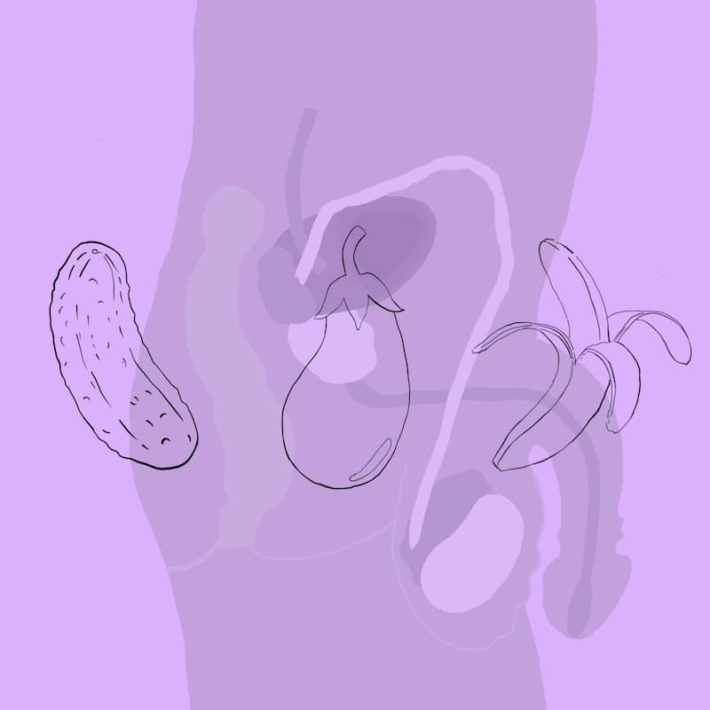

Témy

Ľudské telo

Identita jednotlivca
Sex a sexualita

Prirodzene Web je nezisková platforma, ktorá prináša relevantné, veku primerané a odborné poznatky z oblasti sexuálneho vzdelávania pre dospelých a dospievajúcich ľudí.
{{ telo-post.excerpt }}
{% for post in site.posts %} {% if post.topic == 'telo' %} {% capture times_if %}{% increment times_if %}{% endcapture %} {% if times_if < '2' %}{{ post.excerpt }}
{% endif %} {% endif %} {% endfor %}{{ site.posts[4].excerpt }}
{% for post in site.posts %} {% if post.topic == 'identita' %} {% capture times_if %}{% increment times_if %}{% endcapture %} {% if times_if < '2' %}{{ post.excerpt }}
{% endif %} {% endif %} {% endfor %}{{ site.posts[4].excerpt }}
{% for post in site.posts %} {% if post.topic == 'sex' %} {% capture times_if %}{% increment times_if %}{% endcapture %} {% if times_if < '2' %}{{ post.excerpt }}
{% endif %} {% endif %} {% endfor %}{{ site.posts[4].excerpt }}
{% for post in site.posts %} {% if post.topic == 'zdravie' %} {% capture times_if %}{% increment times_if %}{% endcapture %} {% if times_if < '2' %}{{ post.excerpt }}
{% endif %} {% endif %} {% endfor %}{{ site.posts[4].excerpt }}
{% for post in site.posts %} {% if post.topic == 'vztahy' %} {% capture times_if %}{% increment times_if %}{% endcapture %} {% if times_if < '2' %}{{ post.excerpt }}
{% endif %} {% endif %} {% endfor %}